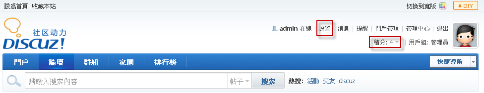
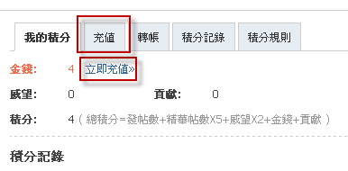
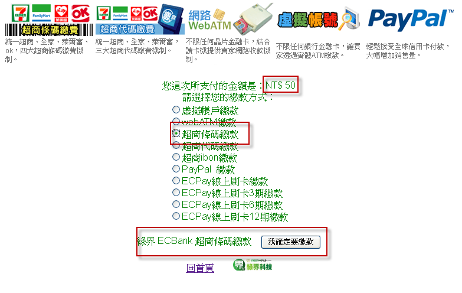
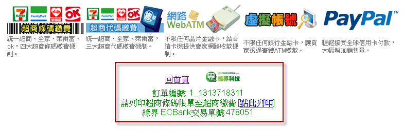
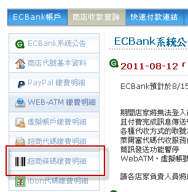
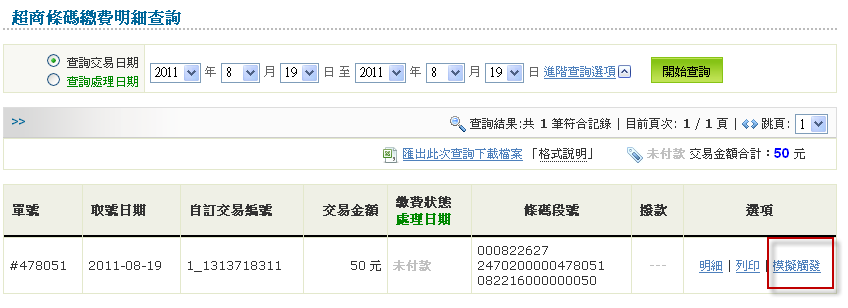
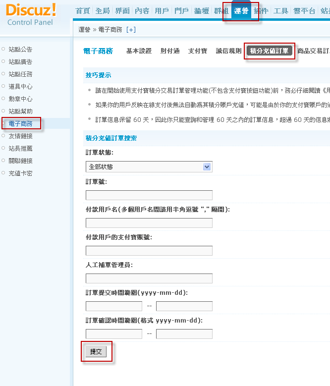
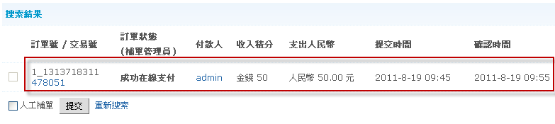

Step 2 - 積分充值說明
請先註冊一個會員或用管理者帳號測試也行
1 請先至論壇首頁，有2種方式可進入積分充值功能畫面，一『設置』、二『積分』如下圖所示，在這我們選擇點選『積分』(如果您是選擇『設置』後，需要再選擇左側選單『個人資料』的下面『積分』才行)

2 您可以在『我的積分』中選擇『立即充值』或右側中的『充值』選項

3 出現綠界金流選項，輸入欲充值的金額，並按下充值

4 請確認金額，並選擇一種繳款方式後，按下『我確定要繳款』按鈕(以超商條碼繳款為例)

5 按下『我確定要繳款』按鈕後，如果成功取號後，會顯示如下圖

6 請利用您在綠界所申請的ECBank帳號登入並執行模擬觸發(測試用)，如果論壇會員是真的充值，並不用執行此步驟
一 按下超商條碼繳費明細

二 對該筆訂單按下『模擬觸發』

三 按下『執行模擬觸發』

四 執行模擬觸發成功

7 會員可以在『我的積分』中查詢充值的狀態

8 管理者可以登入管理中心後在如下圖中查詢訂單


教學結束